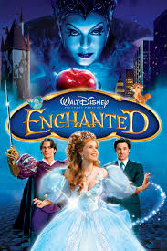

LUCY

Genre: Fantasy
Release date: July 25, 2014
Short description: Lucy is a 2014 English-language French science fiction thriller film written and directed by Luc Besson and produced by his wife Virginie Besson-Silla for his company EuropaCorp. The film was shot in Taipei, Paris, and New York City. It stars Scarlett Johansson, Morgan Freeman, Choi Min-sik, and Amr Waked. Johansson portrays the title character, a woman who gains psychokinetic abilities when a nootropic drug is absorbed into her bloodstream.
HOME ALONE

Genre: Comedy
Release date: November 16, 1990
Short description: Home Alone is a 1990 American Christmas comedy film written and produced by John Hughes and directed by Chris Columbus. The film stars Macaulay Culkin as Kevin McCallister, a boy who is mistakenly left behind when his family flies to Paris for their Christmas vacation. Kevin initially relishes being home alone, but soon has to contend with two burglars played by Joe Pesci and Daniel Stern. The film also features John Heard and Catherine O'Hara as Kevin's parents.
ENCHANTED

Genre: Advanture, comedy, drama
Release date: October 20, 2007
Short description: Enchanted is a 2007 American musical fantasy romantic comedy film, produced by Walt Disney Pictures and Sonnenfeld and Josephson Entertainment. Written by Bill Kelly and directed by Kevin Lima, the film stars Amy Adams, Patrick Dempsey, James Marsden, Timothy Spall, Idina Menzel, Rachel Covey, and Susan Sarandon. The plot focuses on Giselle, an archetypal Disney Princess, who is forced from her traditional animated world of Andalasia into the live-action world of New York City. Enchanted was the first Disney film to be distributed by Walt Disney Studios Motion Pictures, instead of Buena Vista Pictures Distribution
INTOUCHABLES

Genre: Drama, comedy
Release date: 23 September 2011 (San Sebastian)
2 November 2011 (France)
Short description: The Intouchables (French: Intouchables [ɛ̃tuʃabl]), also known as Untouchable (UK), is a 2011 French buddy comedy-drama film directed by Olivier Nakache & Éric Toledano. It stars François Cluzet and Omar Sy. Nine weeks after its release in France on 2 November 2011, it became the second biggest box office hit in France, just behind the 2008 film Welcome to the Sticks.[2] The film was voted the cultural event of 2011 in France with 52% of votes in a poll by Fnac.[3] The film has received several award nominations. In France, the film won the César Award for Best Actor for Omar Sy, and garnered seven further nominations for the César Awards, including the César Award for Best Film, which it lost to the Best Picture winner The Artist.
HOME